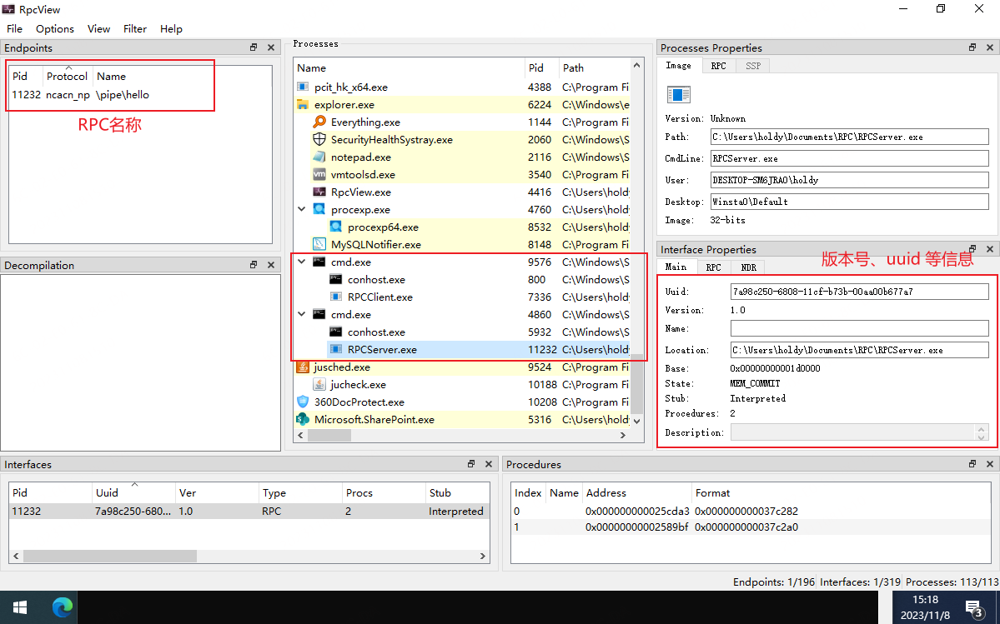
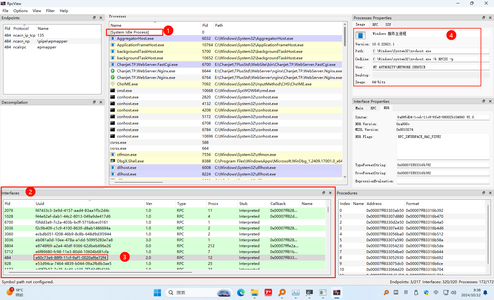
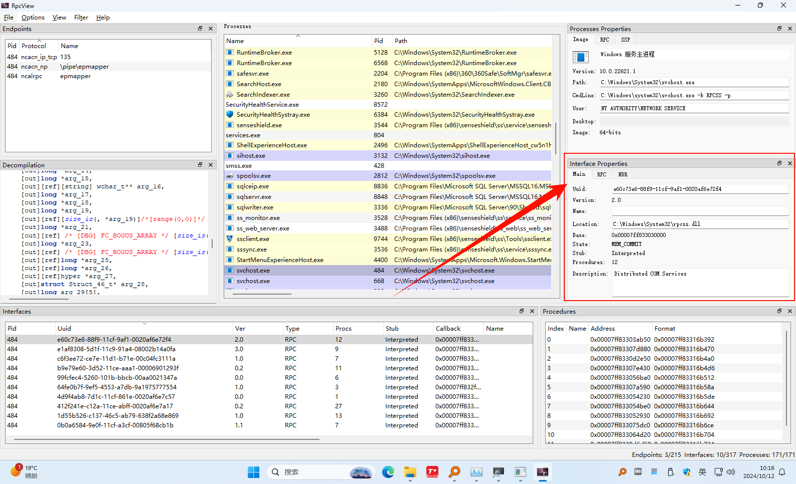
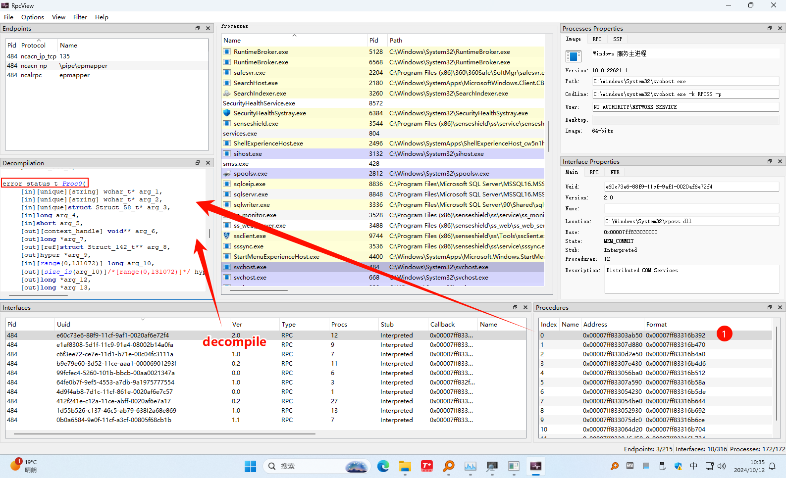
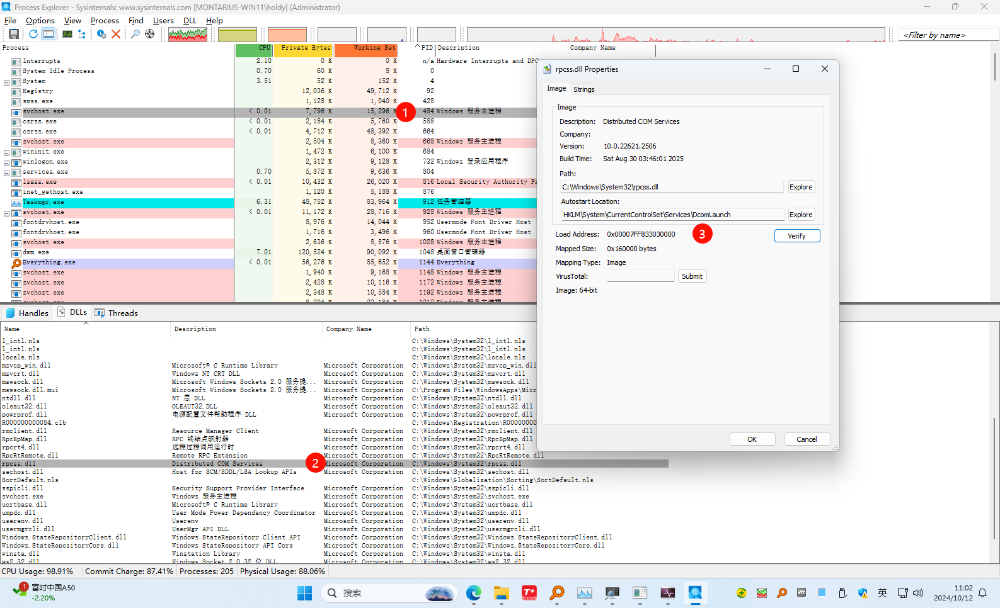
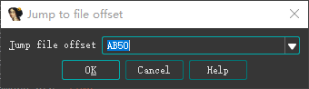
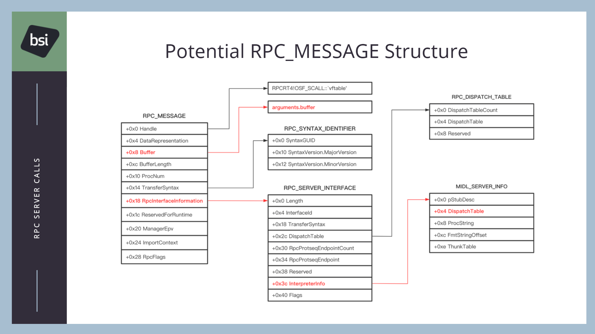

概述：windwos RPC 调试记录
相关文章：
- [【RPC】[【RPC】Tools|Tools
- [【RPC】[【RPC】ALPC|ALPC
- 【RPC】漏洞
- [【RPC】[【RPC】RpcView 相关|RpcView 相关
- https://Github.com/klezVirus/RpcProxyInvoke/blob/3f07a06891bc234ec1a1ea93f62a8b3e8e57b263/%5BSlides%5D%20Unraveling%20an%20RPC%20Thread%20-%20How%20Attackers%20Abuse%20Server%20Calls%20for%20Code%20Execution.pdf - 阅力值 ⭐⭐⭐⭐⭐
- Making Windows RPC Calls: An Overview of Client-Server Interaction - 阅力值 ⭐⭐⭐⭐
- LPC Communication
- Mitigation bounty — From read-write anywhere to controllable calls | by Thomas Garnier | Medium
RPCSS 服务：
- Essential Windows Services: Remote Procedure Call (RPC) / RpcSs | The Core Technologies Blog - 阅力值 ⭐⭐⭐⭐
StackOver Flow:
- Windbg - at the rpcrt4! NdrClientCall2 function - how does it know which pipe to use in order to transfer data to another process? - Reverse Engineering Stack Exchange](https://reverseengineering.stackexchange.com/questions/8116/at-the-rpcrt4ndrclientcall2-function-how-does-it-know-which-pipe-to-use-in-or?newreg=6993e709391d41109a7589e13b408964) - 阅力值 ⭐⭐⭐⭐⭐
前言
windows RPC 是常用的远程调用，有关 rpc 的使用可以在本博客中搜索 RPC 关键字查看相关使用。或者直接查看 RPC 标签。RPC 工具也可以使用开源 RPCView。
RPC 及相关工具
RpcView 是一款非常棒的 Rpc 工具，非常有助于我们在分析调试过程中查看 Rpc 的相关信息。如果你需要调试 RPC 过程，那么这个工具可以是你的得力帮手。
简单使用
可以看到 RpcView 可以看到 RPC 进程使用的协议 ncacn_np ，以及 ncacn_np 协议对应的管道名
\\pipe\\hello。那本次调试的目标就是对标 RpcView。在 windbg 中可以查看一个进程 RPC 详细详细。
调试步骤
使用微软官方的 dbgrpc.exe
rpc 调试主要用到的 windows kits 中带的文件 dbgrpc.exe。详见微软官方文档 使用 DbgRpc 工具 - Windows drivers | Microsoft Learn
使用 Windbg
参考 StackOver Flow 上的那个回答，正式开始对 RPC 的调试。
调试环境
使用 Win11，自己写一个 Demo 用来调试。例如 Github 的 MasqueradePEBtoCopyFile。
windbg 调试获取 RPC 接口 GUID
-
首先说明下原理，RPC 客户端进程最终都会调用到
NdrClientCall2这个接口。这里补充下这个函数的一个调用，从 NdrClientCall4 调用
可以看到第一个参数为 PMIDL_STUB_DESC
cppCLIENT_CALL_RETURN NdrClientCall4(PMIDL_STUB_DESC pStubDescriptor, PFORMAT_STRING pFormat, ...) { va_list va; // [esp+10h] [ebp+10h] BYREF va_start(va, pFormat); return NdrClientCall2(pStubDescriptor, pFormat, va); } -
在 windbg 中添加断点并触发
cbp RPCRT4!NdrClientCall2 -
断点触发后，查看入参
c0:000> .echo "Arguments:"; dds esp L5 Arguments: 00fcd930 752a7174 RPCRT4!NdrClientCall4+0x14 00fcd934 74d81b98 combase!ILocalObjectExporter_StubDesc 00fcd938 74db86fa combase!lclor__MIDL_ProcFormatString+0x2 00fcd93c 00fcd950 00fcd940 00fcdf58其中第一个参数为
74d81b98 -
查看第一个参数，输出如下所示，RPC 相关的信息都保存在了
RpcInterfaceInformation成员，其对应的结构体为RPC_CLIENT_INTERFACEc0:000> dt combase!ILocalObjectExporter_StubDesc 74d81b98 +0x000 RpcInterfaceInformation : 0x74db86b0 Void +0x004 pfnAllocate : 0x74e851b0 void* combase!MIDL_user_allocate+0 +0x008 pfnFree : 0x74eaa150 void combase!MIDL_user_free+0 +0x00c IMPLICIT_HANDLE_INFO : <unnamed-tag> +0x010 apfnNdrRundownRoutines : (null) +0x014 aGenericBindingRoutinePairs : (null) +0x018 apfnExprEval : (null) +0x01c aXmitQuintuple : (null) +0x020 pFormatTypes : 0x74dc56ba "" +0x024 fCheckBounds : 0n1 +0x028 Version : 0xa000c +0x02c pMallocFreeStruct : (null) +0x030 MIDLVersion : 0n134283892 +0x034 CommFaultOffsets : 0x74dc5684 _COMM_FAULT_OFFSETS +0x038 aUserMarshalQuadruple : 0x74d86894 _USER_MARSHAL_ROUTINE_QUADRUPLE +0x03c NotifyRoutineTable : (null) +0x040 mFlags : 1 +0x044 CsRoutineTables : (null) +0x048 ProxyServerInfo : (null) +0x04c pExprInfo : 0x74d86b58 _NDR_EXPR_DESC -
查看
RpcInterfaceInformation，到这里就看到了保存接口信息的成员变量，其对应的结构体为_RPC_SYNTAX_IDENTIFIERc0:000> dt RPC_CLIENT_INTERFACE 0x74db86b0 combase!RPC_CLIENT_INTERFACE +0x000 Length : 0x44 +0x004 InterfaceId : _RPC_SYNTAX_IDENTIFIER +0x018 TransferSyntax : _RPC_SYNTAX_IDENTIFIER +0x02c DispatchTable : (null) +0x030 RpcProtseqEndpointCount : 0 +0x034 RpcProtseqEndpoint : (null) +0x038 Reserved : 0 +0x03c InterpreterInfo : (null) +0x040 Flags : 0 -
查看接口 GUID，可以看到接口 GUID 为
{E60C73E6-88F9-11CF-9AF1-0020AF6E72F4}c0:000> dx -r1 (*((combase!_RPC_SYNTAX_IDENTIFIER *)0x74db86b4)) (*((combase!_RPC_SYNTAX_IDENTIFIER *)0x74db86b4)) [Type: _RPC_SYNTAX_IDENTIFIER] [+0x000] SyntaxGUID : {E60C73E6-88F9-11CF-9AF1-0020AF6E72F4} [Type: _GUID] [+0x010] SyntaxVersion [Type: _RPC_VERSION]
使用 RpcView 查看接口
如果是 32 位的 RPC，则需要用 RpcView32，如果是 64 位的 RPC，就用 RpcView64。
使用 RpcView 查找接口的流程如下图所示，可以看到当前 RPC Client 请求的服务端为 RPCSS。

查看调用的函数
这里补充下上图中 Interface Properties 的部分

到这里可以看到主要调用的 dll 为 rpcss.dll。如果我们还要继续查明调用的是哪个接口，那可以继续看 NdrClientCall2 的第二个参数。
-
第二个参数的结构体如下所示：
ctypedef struct _NDR_PROC_HEADER_RPC { unsigned char handle_type; unsigned char Oi_flags; /* * RPCF_Idempotent = 0x0001 - [idempotent] MIDL attribute * RPCF_Broadcast = 0x0002 - [broadcast] MIDL attribute * RPCF_Maybe = 0x0004 - [maybe] MIDL attribute * Reserved = 0x0008 - 0x0080 * RPCF_Message = 0x0100 - [message] MIDL attribute * Reserved = 0x0200 - 0x1000 * RPCF_InputSynchronous = 0x2000 - unknown * RPCF_Asynchronous = 0x4000 - [async] MIDL attribute * Reserved = 0x8000 */ unsigned int rpc_flags; unsigned short proc_num; unsigned short stack_size; } NDR_PROC_HEADER_RPC; -
查看第二个参数
pFormatc0:000> dt combase!lclor__MIDL_ProcFormatString 74db86fa +0x000 Pad : 0n26624 +0x002 Format : [961] ""c0:000> db 74db86fa 74db86fa 00 68 00 00 00 00 00 00-84 00 32 00 00 00 16 00 .h........2..... 74db870a 5c 02 47 20 08 43 01 00-00 00 00 00 0b 00 04 00 \.G .C..........在 Win11 上该结构体应该是有改动的，不过大致参考一下 StackOver Flow 上的分析
c# StackOver Flow 上的结构体对照 00 48 00 00 00 00 06 00-4c 00 30 40 00 00 00 00 ... handle_type = 0x00 Oi_flags = 0x48 rpc_flags = 0x00000000 proc_num = 0x0006 stack_size = 0x004C本次数据：
c00 68 00 00 00 00 00 00-84 00 32 00 00 00 16 00 handle_type = 0x00 Oi_flags = 0x68 rpc_flags = 0x00000000 proc_num = 0x0000 stack_size = 0x0084可以看到调用的
proc_num为 0 -
查看调用参数

这里可以看到调用的函数地址为0x00007ff83303ab50，注意这个地址是该函数在当前进程中的地址，实际在 DLL 中的偏移地址还需要减去加载地址。实际上在 RpcView 左侧 Interface Properties 窗口的 Main 栏 中就有 DLL 的 Base 基址。不用别的软件再看 DLL 基址了。 下面这步有点多余。 -
查看实际偏移 查看进程加载 rpcss.dll 的地址：

可以看到 load Address 的值为：0x00007FF833030000，实际偏移为：0xab50 -
使用IDA] 查看 rpcss.dll 相关偏移处的内容：

-
ab50处的内容c.text:000000018000AB50 ; __int64 __fastcall Connect(void *, unsigned __int16 *, unsigned __int16 *, struct __MIDL_ILocalObjectExporter_0001 *, unsigned int, unsigned __int16, volatile signed __int32 **, _DWORD *, LPVOID *, _QWORD *, unsigned int, unsigned __int64 *, unsigned int *, _DWORD *, _DWORD *, _DWORD *, unsigned __int16 **, _DWORD *, _DWORD *, unsigned int *, unsigned __int16 **, unsigned int *, struct __MIDL_ILocalObjectExporter_0002 **, unsigned int *, struct _GUID **, _DWORD *, DWORD *, __int64 *, _OWORD *, unsigned int *, _DWORD *, _QWORD *)可以看到调用的 Connect 函数。
到此，一次完整的调用就被展现出来了。在被调用看到的堆栈如下所示：
[0x0] rpcss!_Connect 0x3d23efeb48 0x7ffe6730b4b3
[0x1] RPCRT4!Invoke+0x73 0x3d23efeb50 0x7ffe6730a282
[0x2] RPCRT4!NdrStubCall2Heap+0x342 0x3d23efec90 0x7ffe672ae1ca
[0x3] RPCRT4!NdrStubCall2+0x3a 0x3d23efef20 0x7ffe672edfda
[0x4] RPCRT4!NdrServerCall2+0x1a 0x3d23efef50 0x7ffe672e9188
[0x5] RPCRT4!DispatchToStubInCNoAvrf+0x18 0x3d23efef80 0x7ffe672ca3a6
[0x6] RPCRT4!RPC_INTERFACE::DispatchToStubWorker+0x1a6 0x3d23efefd0 0x7ffe672c9cf8
[0x7] RPCRT4!RPC_INTERFACE::DispatchToStub+0xf8 0x3d23eff0b0 0x7ffe672d74bf
[0x8] RPCRT4!LRPC_SCALL::DispatchRequest+0x31f 0x3d23eff120 0x7ffe672d68c8
[0x9] RPCRT4!LRPC_SCALL::HandleRequest+0x7f8 0x3d23eff1f0 0x7ffe672d5eb1
[0xa] RPCRT4!LRPC_ADDRESS::HandleRequest+0x341 0x3d23eff300 0x7ffe672d591e
[0xb] RPCRT4!LRPC_ADDRESS::ProcessIO+0x89e 0x3d23eff3a0 0x7ffe672da032
[0xc] RPCRT4!LrpcIoComplete+0xc2 0x3d23eff4e0 0x7ffe68170330
[0xd] ntdll!TppAlpcpExecuteCallback+0x260 0x3d23eff580 0x7ffe681a2f86
[0xe] ntdll!TppWorkerThread+0x456 0x3d23eff600 0x7ffe670a7344
[0xf] KERNEL32!BaseThreadInitThunk+0x14 0x3d23eff900 0x7ffe681a26b1
[0x10] ntdll!RtlUserThreadStart+0x21 0x3d23eff930 0x0 StackOver Flow 真是非常有含金量。尽管在之前的学习了解 RPC 过程中已经有观察到 RpcInterfaceInformation 这个关键变量。如 RPCCraft 中甚至已经对该结构体详细说明，但是由于对 NdrClientCall 的调试不够到位，遂一直没有头绪。这次调试也算是了解到了 RPC 的一些关键调用。
Command 断点
RPC 客户端
在 NdrClientCall2 添加命令断点查看 RPC 调用信息
.echo "PMIDL_STUB_DESC:"; dt combase!ILocalObjectExporter_StubDesc ebp+8
.echo "RPC_CLIENT_INTERFACE:"; dt RPC_CLIENT_INTERFACE ebp+8
# 可以直接查看调用的 RPC GUID, 64位下寄存器为 rcx
k;.echo "_RPC_SYNTAX_IDENTIFIER:";r $t0=poi(ebp+8); r $t1=poi(@$t0); r @$t1; dx -r1 (*((wintypes!_RPC_SYNTAX_IDENTIFIER *)(@$t1+4)))
使用示例，断点触发时，会直接打印相关信息，但是必须是从 NdrClientCall4 函数调用过去的才可以，从 combase 调用过去的是从过 eax 传参：
0:000> g
_RPC_SYNTAX_IDENTIFIER:
(*((wintypes!_RPC_SYNTAX_IDENTIFIER *)(@$t0+4))) [Type: _RPC_SYNTAX_IDENTIFIER]
[+0x000] SyntaxGUID : {758C49AA-0000-0000-48DE-FC0000080000} [Type: _GUID]
[+0x010] SyntaxVersion [Type: _RPC_VERSION]
eax=00fcdda0 ebx=00fcdf74 ecx=00fcddc4 edx=00000000 esi=00fcde24 edi=00fcdfb8
eip=752a5ee0 esp=00fcdd80 ebp=00fcdd90 iopl=0 nv up ei pl nz ac po cy
cs=0023 ss=002b ds=002b es=002b fs=0053 gs=002b efl=00000213
RPCRT4!NdrClientCall2:
752a5ee0 8bff mov edi,ediGUID 对应的 RPC 不存在？
32 位和 64 位的都看看
RPC 服务端
查看被调用接口
bu RPCRT4!Invoke+0x73-2d ".echo "RPCRT4!Invoke Call:";u r10 l5;gc"附录
相关结构体
RPC_MESSAGE
该结构体在 RpcCraft 项目中被用来填充自定义 Rpc 消息。

NdrClientCall2 分析脚本
dbgtools.js
如何使用
# 加载脚本
.scriptload dbgtools.js
# 运行命令提示
!dbgtools查看 RPC 发起的客户端
相关逻辑可以看，精准的偏移在 LRPC_SCALL::InquireCallAttributes 这个函数里面可以找找
# 查看 TEB
dt _TEB 000000e9a8494000
# 查看 ReservedForNtRpc 参数
? 0xababa91c`929beb5e ^ ababababdededede
0: kd> ? 0xababa91c`929beb5e ^ ababababdededede
Evaluate expression: 2986281874816 = 000002b7`4c453580
0: kd> dq 000002b7`4c453580
000002b7`4c453580 ffffffff`00000000 00000000`0000115c
000002b7`4c453590 00000000`00001ad8 00000000`00001150
000002b7`4c4535a0 000002b7`4c5db0b0 00000000`00000000
000002b7`4c4535b0 00000000`00000085 00000000`00000000
000002b7`4c4535c0 00000000`00000000 00000000`00000000
000002b7`4c4535d0 00000000`00000000 000000e9`a8eff100
000002b7`4c4535e0 35dc7173`00000000 00000000`00000000
000002b7`4c4535f0 00000000`00000000 5a33d201`00000030
0: kd> dq 002b7`4c5db0b0
000002b7`4c5db0b0 00007ffb`a3931978 00002000`89abcdef
000002b7`4c5db0c0 00000000`00000001 00000000`00000000
000002b7`4c5db0d0 000002b7`4c825040 00000000`00000000
000002b7`4c5db0e0 00000000`00000000 000002b7`4bc225c0
000002b7`4c5db0f0 000002b7`4c5cfab0 00000006`00000008
000002b7`4c5db100 000002b7`4bcb9b00 000002b7`4c560a80
000002b7`4c5db110 000002b7`4c4e61c0 000002b7`4c5d4d80
000002b7`4c5db120 00000000`00000001 000002b7`4c5db140
0: kd> dqs 002b7`4c5db0b0